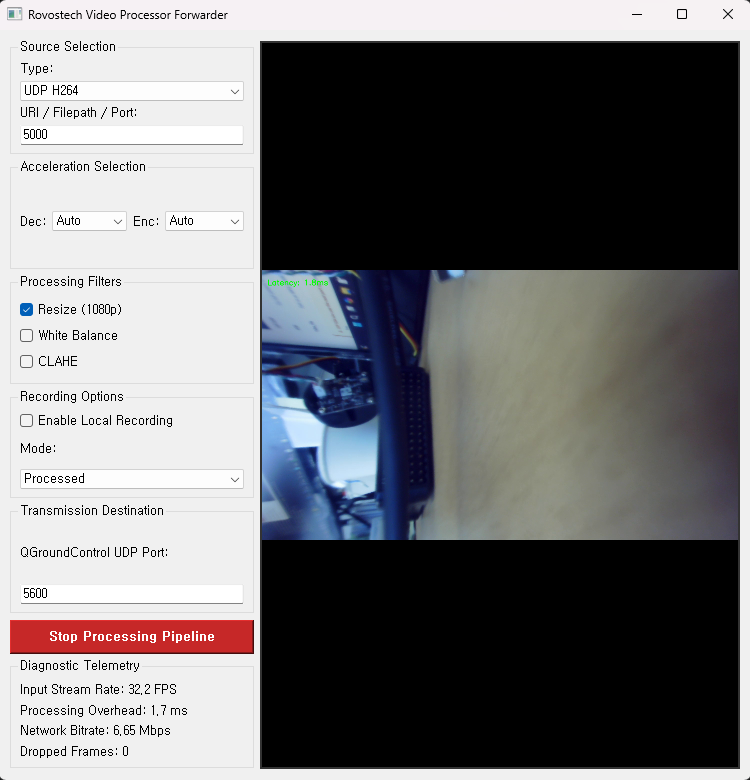
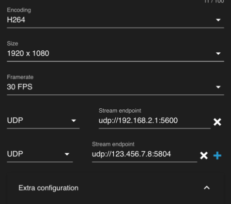
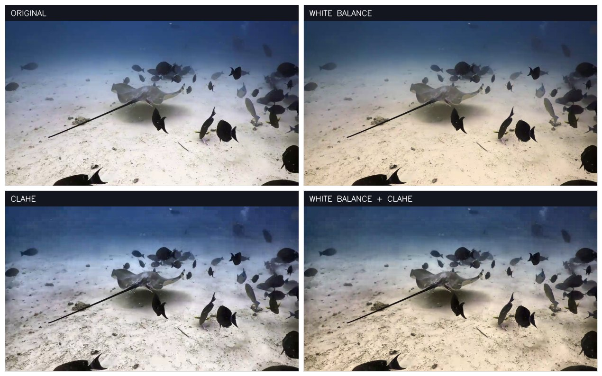
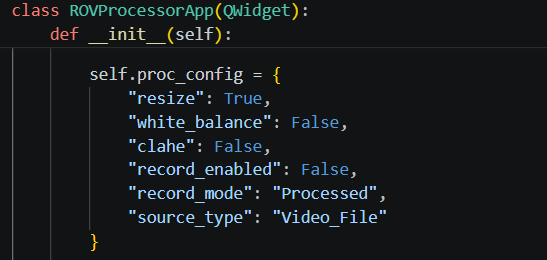
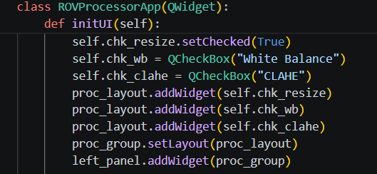
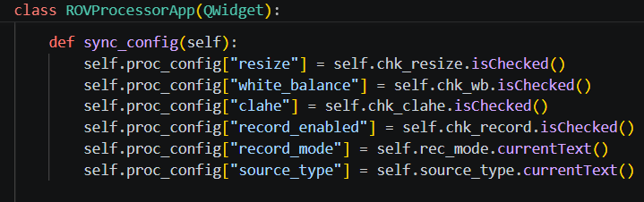

This application takes video from a camera, processes, and forwards to QGroundControl while optionally recording a local copy. This app have a basic filter image processing to correct white balance and/or increase the contrast/CLAHE. This application will served as an example program as a starting point for custom image processing.
This guide covers: installation (section 1), UI explaination (section 2), Process details (section 3), and getting started to extend the app (section 4). Section 5 is a brief note on what was fixed during development and what to avoid.
Two external programs and four Python packages. Tested on Windows 11 with Python 3, OpenCV 4.13 and FFmpeg 8.1.
| Program | Needed for | Required? |
|---|---|---|
| FFmpeg | Encoding, transmitting, recording, and reading network video | Always |
| GStreamer | Receiving UDP H.264 from the vehicle | Only for the UDP H264 source |
| Python | Main Programming Language for Development | Core |
GStreamer download — install both the runtime and devel x86_64 MSVC
packages:
https://gstreamer.freedesktop.org/data/pkg/windows/1.18.6/msvc/
PATH, the environment variable the installer sets, and the usual install
folders on drives (eg. C: to G:). Installation on D:\ should works without
any configuration.| Command | Purpose |
|---|---|
python -m venv venv | Create an isolated environment (Optional) |
venv\Scripts\activate | Activate it (Optional) |
pip install numpy PyQt5 opencv-python opencv-contrib-python | Install the four dependencies |
opencv-contrib-python, not just opencv-python.
The White Balance filter needs the cv2.xphoto module, that is only in the opencv-contrib-python.From the project folder: python CameraProcessForwarder.py
Choose a source, choose an encoder, tick the filters you want, set the destination port, and start.

1 2 3 4 5 6 7 8| Source | Input | Example |
|---|---|---|
| UDP H264 | Port number | 5000 |
| RTSP | Full camera IP address | rtsp://192.168.2.160:554 |
| Video_File | Path to an MP4 or MKV | ./UnderwaterVideoPlayback720.mp4 |
5000 means the
application occupies 5001 as well. Keep the port free.Default camera destination/stream endpoint in ROV setting is usually 192.168.2.1:5600, change it to 5000 (or other available port). It is possible to send the raw camera feed to multiple endpoint (eg. same IP, different port) to feed the qgroundcontrol with the raw data instead of the processed data.

| Mode | Details |
|---|---|
| Processed | Saved the filtered/processed frames |
| Raw Original | Original frames without filter |
| Context | Details | Healthy |
|---|---|---|
| Input Stream Rate | Frames arriving from the camera | Steady, match the camera |
| Processing Overhead | Time spent filtering one frame | < 80 ms |
| Network Bitrate | Actual data crossing the tether | < 50MBps |
| Dropped Frames | Frames discarded due to delays | 0, low |
Watch Processing Overhead while developing a filter. This will shows the delay due to processing. If the average value is more than 80ms, the program should be modified to feed the unprocessed data to the QGroundControl for pilot view
| Message or symptom | Cause |
|---|---|
Could not find GStreamer installation | Not installed, or not on your root drive (eg. C:/gstreamer) |
'x' is not a valid UDP port | For UDP H264, type a port number, not a full address |
Error: FFmpeg could not open ... | Nothing to transmit, or the port is already in use |
| No changes after white balance or CLAHE check | opencv-contrib-python might be missing, check the console warning |
| Nothing appears in QGroundControl | QGC not set to UDP h.264 on the same port |
| Video freezes or tears after a glitch | Tether packet loss; a keyframe is sent every second to recover |
| Your own filter crashes | The traceback is printed to the console, not shown in the window |
There are 3 steps to process the camera feed: Retrieve, process and send. Each process is running parallel to the others.
| Stage | Class | Responsibility |
|---|---|---|
| 1. Retrieve | VideoInputThread | Get the camera data in UDP H.264, RTSP or a file into BGR frames. |
| 2. Process | VideoProcessingThread | Run the image filters, measure the processing time, and feeding the preview. |
| 3. Send | VideoOutputThread | Encode and send processed camera videos using FFmpeg, transmit as RTP. |
The loop is deliberately simple: take a frame, normalise it to 3-channel BGR, run
apply_filters(), time it, draw the result onto the frame, pass it on, and
update the preview at most 15 times a second.

Measured end to end, camera frame to network packet: about 128 ms, of which ~109 ms is the unavoidable cost of receiving and decoding incoming compressed video. QGroundControl adds its own buffering on top, usually 100–200 ms, outside this application's control.
Custom image processing is implemented in the VideoProcessingThread class, apply_filter function.
VideoProcessingThread.apply_filters(frame) receives an OpenCV BGR image
and returns one. Any OpenCV, NumPy or machine-learning code can go inside it. There are
two ways to use it:
Open CameraProcessForwarder.py, find apply_filters(), and add your stages
where the comment marks the spot. Simplest approach for a private build.
Subclass VideoProcessingThread and override
apply_filters(). Inherit using super().apply_filters(frame) and modify as needed.
The filters can be activated using checkbox and activated by config/filter name. The name of the filter can be set using the proc_config in the ROVProcessorApp.
| Step | Method | Details | Reference |
|---|---|---|---|
| 1 | ROVProcessorApp.__init__ | A default in proc_config, e.g. "my_filter": False |  |
| 2 | initUI | The QCheckBox, added to the layout and connected to eventsync_config |  |
| 3 | sync_config | Copy the checkbox state into proc_config |  |
Then read it in your filter with if self.config["my_filter"]:. The value
updates live, so the algorithm can be toggled while video is running.
Rovostech · Video Processor Forwarder · System Guide · 20 Jul 2026 · Full change history in CHANGELOG.md